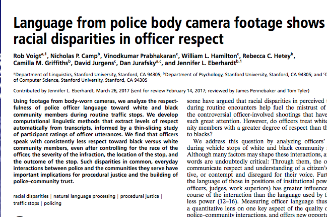

Text mining: look for a pre-specified concept or category. Methods:
Pattern matching: look for a match for a specific sequence of characters
Dictionary: a list of words we think represent a category or concept (e.g., to classify a review as negative, we might use words or phrases like boring, terrible, awful, literally the worst)
Supervised machine learning (SML) for classification (covered in DS2): pre-specify a category at the document level and learn how text predicts that category
Inputs (training data):
Text: movie review; legislative bill; message board chain; admissions essay
Label for that text: negative or not; Republican sponsor or not; contentious or not; accepted or not
Method: often binary classification
Output: a classifier we can apply to unlabeled data
Example of combining text mining with supervised ML

Human raters coded snippets of transcripts to generate labels of whether the interaction was “respectful” or not in a smaller sample of documents
Generated features from the text using dictionary-based methods, e.g.:
Proximity to landmarks: Little Italy; Chinatown; NYU; SOHO; Times Sq
Proximity to airports: JFK; LGA
name
borough
price
Nice and cozy little apt available
Bronx
75
Cozy and privat studio near Times Sq
Manhattan
140
NYCT02-3: Private Sunny Rm, NYU, Baruch, SOHO
Manhattan
75
Prime area in Chinatown and Little Italy
Manhattan
160
2BR Comfy Apt - 15min from MIDTOWN
Queens
150
FourTwin bunkbeds- 5 minutes from JFK
Queens
90
Pvt Room in Quiet Home JFK 6mi LGA 10mi
Queens
38
How might we go about creating indicators for whether the listing contains those attributes?
Manual lookup of words or counting words from a dictionary
Manual approach 1: looking for a single word
## using the `name_upper` var, flag listings that mention cozy## (na = False treats missing listing names as not mentioning cozy)ab['is_cozy'] = np.where(ab.name_upper.str.contains("COZY", na =False),True, False)## find the mean price by borough and whether the listing mentions cozymp = pd.DataFrame(ab.groupby(['is_cozy','neighbourhood_group'])['price'].mean())## reshape to wide format so that each borough is a row;## one col is the mean price for listings that describe## the place as cozy; other col is mean price for listings## without that wordmp_wide = pd.pivot_table(mp, index = ['neighbourhood_group'], columns = ['is_cozy'])mp_wide.columns = ['no_mention_cozy', 'mention_cozy']
Result: within the same borough, higher prices for listings that don’t describe the place as cozy
mp_wide
no_mention_cozy
mention_cozy
neighbourhood_group
Bronx
89.273292
73.768000
Brooklyn
128.160259
91.155458
Manhattan
204.104663
129.647171
Queens
102.596682
80.344388
Staten Island
120.650307
74.319149
Manual approach 2: create a dictionary of words summarizing a concept
## construct dictionaryspace_indicators = {'small': ['COZY', 'COMFY', 'LITTLE', 'SMALL'],'large': ['SPACIOUS', 'LARGE', 'HUGE', 'GIANT']}space_indicators['small']## for each listing, we want the number of occurrences## of words in each key --- first, test with one listingpractice_listing ="NICE AND COZY LITTLE APT AVAILABLE WITH HUGE DECK"practice_listing.split(" ")
### split at space and look at overlap with each key in the dictionarywords_overlap_small = [word for word in practice_listing.split(" ")if word in space_indicators['small']]words_overlap_large = [word for word in practice_listing.split(" ")if word in space_indicators['large']]words_overlap_smallwords_overlap_large### could then take length as a fraction of all wordslen(words_overlap_small)/len(practice_listing.split(" "))len(words_overlap_large)/len(practice_listing.split(" "))
['COZY', 'LITTLE']
['HUGE']
0.2222222222222222
0.1111111111111111
Automated process 1: part-of-speech tagging
Intro to part-of-speech (POS) tagging and named entity recognition (NER)
The previous approach was very manual — we needed to read some listings and manually construct a dictionary of adjectives we thought were related to a concept
We also didn’t capture other price-relevant attributes of the listing, or what we might call named entities:
Places: e.g., Chinatown, Little Italy, Times Square
Infrastructure: e.g., LGA, JFK
Part-of-speech tagging with an example
## specify exampleexample_for_tag ="This is a chill apt next to the subway in LES Chinatown"## part-of-speech tagging using nltktokens = word_tokenize(example_for_tag) # generate list of tokenstokens_pos = pos_tag(tokens) # generate POS tags for those tokens## returns a list of tuples: first element is the word;## second element is the part of speechtokens_pos
“This is a chill apt next to the subway in LES Chinatown”
tag
meaning
in our example
CC
coordinating conjunction
CD
cardinal digit
DT
determiner
This; the; a
JJ
adjective
apt; next
JJR
adjective (comparative; e.g., bigger)
NN
noun (singular; e.g., desk)
chill; subway
NNS
noun (plural; e.g., desks)
NNP
proper noun (singular; e.g., Harrison)
LES; Chinatown
NNPS
proper noun (plural; e.g., Americans)
TO
to
to
VB / VBD / VBG
verb (base / past / gerund; e.g., take, took, taking)
VBZ
verb (3rd person singular present; e.g., takes)
is
Red = the tagger got it wrong
After tagging, extract words with a specific part of speech
Example: extract the proper nouns (LES and Chinatown)
## check if the second element in the tuple is equal to NNP;## if so, return the first element of the tuple (the actual word)all_prop_noun = [one_tok[0] for one_tok in tokens_posif one_tok[1] =="NNP"]all_prop_noun
['LES', 'Chinatown']
## same idea for adjectives or singular nounsall_adj_noun = [one_tok[0] for one_tok in tokens_posif one_tok[1] =="JJ"or one_tok[1] =="NN"]all_adj_noun
['chill', 'apt', 'next', 'subway']
Automated process 2: named entity recognition
Named entity recognition
POS tagging is useful for broad categories — e.g., LES and Chinatown both tagged as proper nouns
With named entity recognition, we classify proper nouns into more granular subtypes. See the spaCy docs for a full list; some relevant ones:
PERSON: e.g., Professor Xavier
FAC: buildings, highways, bridges — e.g., Boston Logan International Airport
GPE: countries, cities, states — e.g., Washington, DC
DATE: e.g., May 4th, 2021
To do this, we switch from the nltk package to the spaCy package
Example tweet to find named entities in
When AOL was founded in the year 2000 I remember raising my hand and asking ‘well…if you’re using my data - where is my $50’ and no one had a good answer…and there still isn’t one.
Which words do we think will be tagged as named entities?
## modified from a real tweetm_tweet ="""When AOL was founded in the year 2000 I remember raising my handand asking 'well...if you're using my data - where is my $50'and no one had a good answer...and there still isn't one."""
Code to get named entities from that tweet
spacy_dtweet = nlp(m_tweet)type(spacy_dtweet)for one_tok in spacy_dtweet.ents:print("Entity: "+ one_tok.text +"; NER tag: "+ one_tok.label_)
spacy.tokens.doc.Doc
Entity: AOL; NER tag: ORG
Entity: the year 2000; NER tag: DATE
Entity: 50; NER tag: MONEY
Breaking this down:
nlp: black-boxy function within spaCy that adds tags to a string (not only named entities)
spacy_dtweet.ents: extracting all named entities from the spaCy object
one_tok: arbitrary placeholder for one entity
one_tok.text: original string
one_tok.label_: named entity label for that string
Generalizing to a column of strings
## for runtime purposes, just taking a few airbnb listingsab_name_examples = ab.name[10:15]ab_name_examples## define function that takes in one airbnb stringdef get_gpe(one_string): tagged_str = nlp(one_string) # tag## (1) iterate over entities, (2) check if the label## is GPE (place), and (3) if so, return the original entity all_gpe = [one_tok.text for one_tok in tagged_str.entsif one_tok.label_ =="GPE"]return all_gpe## apply over the examples[get_gpe(one_string) for one_string in ab_name_examples]
10 Beautiful 1br on Upper West Side
11 Central Manhattan/near Broadway
12 Lovely Room 1, Garden, Best Area, Legal rental
13 Wonderful Guest Bedroom in Manhattan for SINGLES
14 West Village Nest - Superhost
Name: name, dtype: object
[[], [], ['Garden'], ['Manhattan'], []]
In-class activity
See Activity 1 in notebook
One variation: lowercase “aol”
m_tweet_lower = m_tweet.replace("AOL", "aol")for one_tok in nlp(m_tweet_lower).ents:print("Entity: "+ one_tok.text +"; NER tag: "+ one_tok.label_)
Entity: the year 2000; NER tag: DATE
Entity: 50; NER tag: MONEY
Automated process 3: sentiment analysis
Sentiment analysis: dictionary-based approach
Operates similarly to our manual dictionary but, in this case, keys are words in a “lexicon” and values are the sentiment score
In basic form, a dictionary of two types of words (often non-exhaustive; other words treated as neutral):
Positive
Negative
We’ll use the VADER (Valence Aware Dictionary and sEntiment Reasoner) lexicon
VADER sentiment scoring: calculating sentiment
## initialize a scorersent_obj = SentimentIntensityAnalyzer()## score one listingpractice_listing ="NICE AND COZY LITTLE APT AVAILABLE"sentiment_example = sent_obj.polarity_scores(practice_listing)sentiment_example
sent_obj = SentimentIntensityAnalyzer(): initializing a scorer
sent_obj.polarity_scores(practice_listing): apply the polarity scores function to the string we feed it
Score is aggregated to the level of the text you feed it; here we’re scoring a sentence, but you might score a paragraph or document
Output: dictionary with four keys — neg, neu, pos, and compound (summary of pos, neg, and neutral; standardized between -1 = most negative and +1 = most positive)
Scoring a few more examples
## adding phrase with word terriblepractice_listing_2 ="NICE AND COZY LITTLE APT AVAILABLE. REALLY TERRIBLE VIEW."sentiment_example_2 = sent_obj.polarity_scores(practice_listing_2)## adding phrase about rats; bad but might not be in scoring dictionarypractice_listing_3 ="NICE AND COZY LITTLE APT AVAILABLE. HAS RATS THOUGH."sentiment_example_3 = sent_obj.polarity_scores(practice_listing_3)## summarize all 3print("String: "+ practice_listing +" scored as:\n"+str(sentiment_example))print("String: "+ practice_listing_2 +" scored as:\n"+str(sentiment_example_2))print("String: "+ practice_listing_3 +" scored as:\n"+str(sentiment_example_3))
String: NICE AND COZY LITTLE APT AVAILABLE scored as:
{'neg': 0.0, 'neu': 0.641, 'pos': 0.359, 'compound': 0.4215}
String: NICE AND COZY LITTLE APT AVAILABLE. REALLY TERRIBLE VIEW. scored as:
{'neg': 0.257, 'neu': 0.531, 'pos': 0.212, 'compound': -0.1513}
String: NICE AND COZY LITTLE APT AVAILABLE. HAS RATS THOUGH. scored as:
{'neg': 0.0, 'neu': 0.741, 'pos': 0.259, 'compound': 0.4215}
Issues:
Many words classified as neutral
Appropriately scored terrible as negative, but didn’t know that, in this context, rats should be scored negatively
One way to improve: augment the default VADER dictionary
## the lexicon is a dictionary: key is the word; value is the score## here, benchmarking the negativity of rodents to the word aversionsent_obj.lexicon['aversion']## create a dictionary with negative scores for pestspest_words = {'rat': -1.9, 'rats': -1.9,'mice': -1.9, 'mouse': -1.9,'roach': -1.9, 'cockroach': -1.9}## update the lexicon with that dictionary (creating a new## sentiment object to avoid writing over the older one)new_si = SentimentIntensityAnalyzer()new_si.lexicon.update(pest_words)## re-score the third exampleprint("After lexicon update: "+ practice_listing_3 +" scored as:\n"+str(new_si.polarity_scores(practice_listing_3)))
-1.9
After lexicon update: NICE AND COZY LITTLE APT AVAILABLE. HAS RATS THOUGH. scored as:
{'neg': 0.228, 'neu': 0.551, 'pos': 0.22, 'compound': -0.0258}
Better way to improve (after learning ML in DS2): build a custom classifier
terms in listing
listing_id
avg_stars
cozy
rat
spacious
cable
marble
…
1
2.4
1
1
0
0
0
2
3.8
0
0
1
0
1
3
4.9
1
0
1
1
0
…
Unsupervised analyses
Text mining of Airbnb listings versus topic modeling
Suppose we’re interested in the relationship between (1) the words people use to describe their Airbnb listing and (2) neighborhood change (e.g., rapid demographic change in the ethnicity/income of residents)
Text mining approach: build a dictionary of words or phrases we think signal gentrification (cute; safe; near cold brew) and look at the correlation with neighborhood change
Drawbacks:
Might be difficult to know in advance which words to include
Lack of surprise: what if there’s a pattern in the listings correlated with demographic change that we didn’t anticipate?
Therefore, rather than search for specific words or phrases, begin with the full text of the document
Tokenize/represent each document as a bag of words
Represent each document as a “bag of words,” where order doesn’t matter
## convert to lowercase and a listcorpus_lower = ab.name.str.lower().to_list()## tokenize the first four listings[wordpunct_tokenize(one_listing) for one_listing in corpus_lower[0:4]]
Notice that it contains a lot of extraneous information
Preprocess to “boost” the signal-to-noise ratio
Compound words: combine tokens into a single term:
[clean] [quiet apt] [home] [by] [the] [park]
Stopword removal: remove words not related to what we’re studying:
[clean] [quiet apt] [home] [by] [the] [park] \(\implies\) [clean] [quiet apt] [home] [park]
Stemming: take the end off conjugated verbs or plural nouns, leaving the “stem”:
[clean] [quiet apt] [home] [park] \(\implies\) [clean] [quiet apt] [hom] [park]
Lemmatization: similar goal to stemming but, rather than just stripping from the end, truncates with regard to context (e.g., treats park differently in “park a car” versus “a beautiful park”)
Step one: create a stopword list to filter out
Why do this early? If you want to create your own list of stopwords for your context, it’s easier to do that before preprocessing that alters the words (e.g., stemming apartment to apart)
## call a specific set of stopwords from nltklist_stopwords = stopwords.words("english")## augment with your owncustom_words_toadd = ['apartment', 'new york', 'nyc','bronx', 'brooklyn','manhattan', 'queens','staten island']list_stopwords_new = list_stopwords + custom_words_toaddlist_stopwords_new[0:10]
Step two: convert text to lowercase and filter out stopwords
## use wordpunct tokenize on one listingexample_listing = corpus_lower[3]wordpunct_tokenize(example_listing)## filter out stopwordsnostop_listing = [word for word in wordpunct_tokenize(example_listing)if word notin list_stopwords_new]nostop_listing
['cozy', 'entire', 'floor', 'of', 'brownstone']
['cozy', 'entire', 'floor', 'brownstone']
Step three: stem and additional preprocessing
## initialize stemmerporter = PorterStemmer()## apply to one tokenized text by iterating over its tokensexample_listing_preprocess = [porter.stem(token)for token in nostop_listingif token.isalpha() andlen(token) >2]example_listing_preprocess
['cozi', 'entir', 'floor', 'brownston']
Breaking it down:
if token.isalpha(): only retain tokens that are words (strips things like the 1 in 1 bedroom); might skip depending on context
len(token) > 2: only retain tokens with 3+ characters; e.g., removes br
porter.stem(token): use the Porter stemmer we initialized to stem the words; e.g., entire\(\implies\)entir; cozy\(\implies\)cozi
In-class activity
See Activity 2 in notebook
Repeat over all documents and combine into a document-term matrix
More manual way: find the union of all words by (1) creating an empty dictionary; (2) looping over the documents; (3) when a document contains a new term, add it to the dictionary as a key; (4) when a document contains a term already in the dictionary, count how many times the term appears in the doc
More automatic way: use the sklearn function CountVectorizer
Code for more automatic document-term matrix creation
def create_dtm(list_of_strings, metadata):## init tokenizer and apply to list of documents vectorizer = CountVectorizer(lowercase =True) dtm_sparse = vectorizer.fit_transform(list_of_strings)## convert to (1) dense matrix; (2) dataframe and (3) add metadata dtm_dense_named = pd.DataFrame(dtm_sparse.todense(), columns = vectorizer.get_feature_names_out()) metadata = metadata.copy() metadata.columns = ["metadata_"+ col for col in metadata.columns] dtm_dense_named_withid = pd.concat([metadata.reset_index(), dtm_dense_named], axis =1)return dtm_dense_named_withid
Breaking things down:
CountVectorizer: initializes an sklearn tokenizer to tokenize the (preprocessed) strings
vectorizer.fit_transform: fed a list of documents; returns a sparse matrix where each row is a document, each column is a term, and values count how many times term \(t\) appears in doc \(d\) (sparse representation saves memory given the prevalence of zeroes)
dtm_sparse.todense(): switches from the sparse representation to the normal dense one so we can treat it as a pandas DataFrame
Remainder of the code adds back document-level covariates (what I’m calling metadata)
Select a sample of listings to work with
## filter out NAs; for shorter runtime, random sample of 1000;## rename price since it's likely to be a corpus wordab_small = (ab.loc[~ab.name.isnull(), ['id', 'neighbourhood_group', 'price', 'name']] .copy() .rename(columns = {'price': 'price_rawdata'}) .sample(n =1000, random_state =9899))ab_small['name_lower'] = ab_small['name'].str.lower()ab_small.head()
id
neighbourhood_group
price_rawdata
name
name_lower
22540
18227529
Manhattan
140
Live in New York Near Central Park and Columbi...
live in new york near central park and columbi...
47531
35794273
Brooklyn
130
Hope Garden
hope garden
33906
26858196
Brooklyn
75
AWESOME 2 BEDS - QUEEN + SOFA - NEXT TO METRO
awesome 2 beds - queen + sofa - next to metro
12047
9369514
Brooklyn
25
STARTUP CHEAP PLACE BROOKLYN
startup cheap place brooklyn
2908
1669149
Manhattan
250
Beautiful Modern Midtown Apartment
beautiful modern midtown apartment
Create the document-term matrix from the raw (lowercase) text
## sum each term columntop_terms = dtm_nopre[[col for col in dtm_nopre.columnsif"metadata"notin col and col !="index"]].sum(axis =0)## sort from most frequent to least frequenttop_terms.sort_values(ascending =False).head(15)
in 357
room 204
bedroom 164
private 146
cozy 134
apartment 131
to 107
apt 97
studio 94
brooklyn 93
spacious 83
manhattan 80
park 78
the 77
with 74
dtype: int64
What would change if we used the preprocessed text?
In-class activity
See Activity 3 in notebook
Topic models: concepts
Latent Dirichlet Allocation (LDA)
Idea: documents exhibit each topic in some proportion. This is an admixture.
Each document is a mixture over topics. Each topic is a mixture over words.
LDA estimates:
The distribution over words for each topic
The proportion of a document in each topic, for each document
Maintained assumptions: bag of words; fix the number of topics ex ante
This and next two slides adapted from: Brandon Stewart, LDA
Where’s the information for each word’s topic? Reconsider the document-term matrix:
Word\(_1\)
Word\(_2\)
\(\cdots\)
Word\(_J\)
Doc\(_1\)
0
1
\(\cdots\)
0
Doc\(_2\)
2
0
\(\cdots\)
3
\(\vdots\)
\(\vdots\)
\(\vdots\)
\(\ddots\)
\(\vdots\)
Doc\(_N\)
0
1
\(\cdots\)
1
We are learning the pattern of which words occur together
The model wants a topic to contain as few words as possible, but a document to contain as few topics as possible. This tension is what makes the model work.
Topic models: implementation in Python
Two routes to topic modeling
Create the document-term matrix yourself; it’s then compatible with a variety of clustering methods
Use built-in functions in gensim to start with a list of preprocessed documents and end with an estimated topic model that returns:
Topics and their high-probability words
For each document, a \(k\)-length vector of topic probabilities, where \(k\) is the number of topics
Steps for topic modeling using gensim: in words
Create a dictionary: the union of all (preprocessed) words in the corpus (collection of documents); it’s fed tokenized text and results in a dictionary where keys are a “term id” and values are the word itself
Filter out words that appear in a very low proportion of documents (lower bound) or a very high proportion of documents (upper bound): stopword removal should take care of most of the latter; the former matters since words need to co-occur in multiple documents for themes to be meaningful
Apply the dictionary to the tokenized text to create a crosswalk between (1) each word in the text and (2) that word in the filtered dictionary: drops words that were filtered out of the corpus dictionary
Estimate the topic model: use the LDA model within gensim
Steps for topic modeling using gensim: preprocessing
## Step 1: tokenize documents and store in list## (here using raw text; in the activity you'll use the preprocessed texts)text_raw_tokens = [wordpunct_tokenize(one_text)for one_text in ab_small.name_lower]## Step 2: use gensim to create dictionary - gets all unique words across documentstext_raw_dict = corpora.Dictionary(text_raw_tokens)## Step 3: filter out very rare and very common words from dictionary## no_below: integer count of docs a word must appear in (here, 5% of docs)## no_above: max *fraction* of docs a word can appear in (here, 95%)lower_bound =round(ab_small.shape[0]*0.05)text_raw_dict.filter_extremes(no_below = lower_bound, no_above =0.95)## Step 4: map words in each tokenized document to the dictionary## output: list with one element per document; each element## is a list of (term id, count) tuplescorpus_fromdict = [text_raw_dict.doc2bow(one_text)for one_text in text_raw_tokens]corpus_fromdict[0:3]
See the documentation for many parameters you can vary!
## Step 5: estimate a model by feeding it: (1) the corpus## mapped to the dictionary, (2) the number of topics (often k## in notation), (3) the dictionary itself, and other argumentsldamod = gensim.models.ldamodel.LdaModel(corpus_fromdict, num_topics =4, id2word = text_raw_dict, passes =6, alpha ='auto', per_word_topics =True, random_state =91988)type(ldamod)
gensim.models.ldamodel.LdaModel
Returns a trained LdaModel object with various methods/attributes
Interacting with the model output: top words for each topic
## corpus-wide summary of topics and their top wordstopics = ldamod.print_topics(num_words =10)for topic in topics:print(topic)
By default, these are the highest-probability words, which may just reflect frequently-occurring words in the corpus (note in, the, of — we haven’t preprocessed yet!)
pyLDAvis has ways to introduce penalties to find words more “unique to” a topic
Interacting with the model output: topic probabilities for each document
## for each document, get list of (topic, probability) tuplesdoc_topics = [ldamod.get_document_topics(item) for item in corpus_fromdict]## print first few documents and their topic probabilitiesfor tokens, probs inzip(text_raw_tokens[0:4], doc_topics[0:4]):print(" ".join(tokens))print([(topic, round(float(prob), 2)) for topic, prob in probs])
live in new york near central park and columbia u .
[(0, 0.73), (1, 0.04), (2, 0.03), (3, 0.2)]
hope garden
[(0, 0.25), (1, 0.28), (2, 0.21), (3, 0.26)]
awesome 2 beds - queen + sofa - next to metro
[(0, 0.04), (1, 0.87), (2, 0.04), (3, 0.05)]
startup cheap place brooklyn
[(0, 0.12), (1, 0.13), (2, 0.1), (3, 0.65)]
Visualizing topics with pyLDAvis
lda_display = gensimvis.prepare(ldamod, corpus_fromdict, text_raw_dict)## save as a standalone html page and embed below## (in a notebook, can use pyLDAvis.display(lda_display) instead)pyLDAvis.save_html(lda_display, "week12_figs/ldavis_raw.html")
Which topics are associated with higher listing prices?
## long dataframe: one row per document x topic## (minimum_probability = 0 so every doc gets all k topics)n_topics = ldamod.num_topicstopic_probs_long = pd.DataFrame( [(doc_id, topic, prob)for doc_id, one_doc inzip(ab_small.id, corpus_fromdict)for topic, prob in ldamod.get_document_topics(one_doc, minimum_probability =0)], columns = ['doc_id', 'topic', 'probability'])## pivot to wide format: one row per document, one col per topictopic_probs_wide = topic_probs_long.pivot(index ='doc_id', columns ='topic', values ='probability')topic_probs_wide.columns = ["topic_"+str(i) for i in topic_probs_wide.columns]topic_probs_wide = topic_probs_wide.reset_index()## merge with original data and find each listing's top topictopic_wmeta = pd.merge(topic_probs_wide, ab_small, left_on ='doc_id', right_on ='id')topic_wmeta['toptopic'] = topic_wmeta[[col for col in topic_wmeta.columnsif"topic_"in col]].idxmax(axis =1)topic_wmeta[['name', 'topic_0', 'topic_1', 'topic_2', 'topic_3', 'toptopic']].head()
name
topic_0
topic_1
topic_2
topic_3
toptopic
0
Spacious 1 bedroom in luxe building
0.043754
0.872631
0.037205
0.046410
topic_1
1
SpaHa Loft: Enormous and Bright
0.115117
0.134369
0.628190
0.122325
topic_2
2
Modern Apt with Spectacular Views
0.075069
0.085501
0.759516
0.079914
topic_2
3
DOMINIQUE'S NY mini efficiency* wifi*metro*quiet
0.246242
0.278291
0.212672
0.262796
topic_1
4
ENJOY Downtown NYC!!
0.246242
0.278291
0.212672
0.262796
topic_1
Mean price by top topic
## group by topic and find mean pricetopic_wmeta.groupby('toptopic').agg({'price_rawdata': 'mean'})
price_rawdata
toptopic
topic_0
166.927481
topic_1
166.216867
topic_2
150.900552
topic_3
125.133333
Mean price by top topic
## group by topic and borough -- higher prices for some topics## also reflect different borough composition(topic_wmeta.groupby(['toptopic', 'neighbourhood_group']) .agg({'price_rawdata': 'mean'}) .unstack())
price_rawdata
neighbourhood_group
Bronx
Brooklyn
Manhattan
Queens
Staten Island
toptopic
topic_0
41.166667
155.446429
199.731092
92.400000
NaN
topic_1
152.500000
113.576000
224.237500
108.930233
60.0
topic_2
62.500000
122.959459
199.790123
68.545455
199.0
topic_3
60.000000
113.989691
159.764706
82.108108
100.0
Post-modeling diagnostics: how model fit varies with the number of topics
Concept: tradeoff between two metrics:
Within-topic coherence: increases when the “top words” for a topic (highest-probability words) tend to co-occur in the same document; tends to be higher if you have a few topics dominated by frequently-occurring words
Between-topic exclusivity: increases when words are “exclusive” to a topic, or only have a high probability of appearing in a few topics; tends to be higher as you increase the number of topics, since each is more granular
gensim has a CoherenceModel class for calculating coherence: documentation
Many different types of topic models
Structural topic model: allows (1) topic prevalence and (2) topic content to vary as a function of document-level covariates (e.g., do documents produced in 1990 talk about something differently than documents produced in 2020?); implemented in stm in R (Roberts, Stewart, Tingley, Benoit)
Correlated topic model: a way to explore between-topic relationships (Blei and Lafferty); implemented in topicmodels in R
Keyword-assisted topic model: seed the topic model with keywords to increase the face validity of topics for what you’re trying to measure; implemented in keyATM in R (Eshima, Imai, Sasaki)
And more…
Extensions to material we’re not covering
N-grams: similar setup, but modify create_dtm to use bigrams (e.g., CountVectorizer(ngram_range = (1, 2)))
Word embeddings: bag of words treats all text in a document as an unordered collection. But the context of a word (e.g., cozy brownstone versus spacious brownstone) may matter, and we may want more flexible windows than n-grams. The basic idea behind embeddings is to (1) take a focal word (e.g., “cozy”) and (2) predict its context within some window (e.g., “brownstone,” “tiny,” “cramped”). Each word is then represented as a vector, so spacious might be very close to brownstone, less close to studio, etc. Good intro here
In-class activity
See Activity 4 in notebook
LLMs for text classification
What are large language models (LLMs)?
Language model: predicts the next word given a sequence of words — e.g., “the students opened their ___” \(\implies\)books, laptops, exams
Large language models (ChatGPT, Claude, Gemini, LLaMA) do the same prediction task, but:
Use the transformer architecture, where attention lets the meaning of a word depend on its context (cozy brownstone vs. cozy = tiny)
Have billions to trillions of parameters, trained on massive amounts of text (web, books, code)
Are then fine-tuned to follow human instructions
Two ways to use them:
Out of the box with prompts: a natural-language instruction; the model generates the next tokens conditional on the prompt (no parameter updates)
Fine-tuning: further train the model’s parameters on your own labeled data
Why it matters for text as data: tasks that used to require dictionaries (VADER), hand-labeled training data (supervised ML), or lots of human coding can now often be done with a well-designed prompt
Usage
All these applications are hard to do at scale via the web-browser versions of LLMs (e.g., ChatGPT)
Instead, access the models via an API (like the APIs from week 9!) using R or Python to have them perform tasks
Usually not free: you pay per query (based on the number of tokens in the prompt and response). Cheap for small tasks; can get expensive for millions of predictions. Some providers (e.g., Google’s Gemini API) have a free tier with rate limits, which we’ll use today
Use zero-shot prompting (no labeled examples) to measure psychological concepts like sentiment in tweets, news headlines, and Reddit comments
Example prompt: “Is the sentiment of this text positive, neutral, or negative? Answer only with a number: 1 if positive, 2 if neutral, and 3 if negative. Here is the text: [TEXT]”
Why it works — back to next-word prediction:
The model compares, e.g., \(P(\text{positive} \mid \text{"I love this class"})\) vs. \(P(\text{negative} \mid \text{"I love this class"})\)
Positive doesn’t need to be the most likely next word overall — just more likely than the other labels
Can LLMs be used for public opinion research, or to generate synthetic survey responses?
Prompt LLMs to:
Adopt personas defined by demographic and political characteristics
Answer questions about their feelings toward social and political groups (0-100 “feeling thermometers”)
Using features taken from the American National Election Study (ANES)
Compare the synthetic responses to real ANES respondents
Prompts
Persona template:
It is [YEAR]. You are a [AGE] year-old, [MARST], [RACETH] [GENDER] with [EDUCATION] making [INCOME] per year, living in the United States. You are [IDEO], [REGIS] [PID] who [INTEREST] pays attention to what’s going on in government and politics.
Each bracket is filled in with an ANES respondent’s actual characteristics
The model then answers the feeling thermometer questions as that person
Getting a free Gemini API key
We’ll use Google’s Gemini API, which has a free tier (no credit card needed):
Add it to your creds.yaml file (same file as the week 9 API keys):
gemini_api:api_key:"your-key-here"
Caveats of the free tier:
Rate limits on requests per minute and per day (check yours in AI Studio) \(\implies\) add a pause between calls
Google may use free-tier prompts and responses to improve its products \(\implies\) fine for public Airbnb listings; don’t send sensitive or private data
Sentiment classification with an LLM: setup
Same steps as the APIs in week 9: (1) credentials, (2) construct a query, (3) call the API, (4) extract the content
## load credswithopen("../creds.yaml", 'r') as stream:try: creds = yaml.safe_load(stream)except yaml.YAMLError as exc:print(exc)gemini_key = creds['gemini_api']['api_key']## Gemini's OpenAI-compatible endpoint: same request format as OpenAI's API,## so the code works with other providers by changing the url, key, and modelgemini_url ="https://generativelanguage.googleapis.com/v1beta/openai/chat/completions"## model to use --- see https://ai.google.dev/gemini-api/docs/models## for current free-tier model namesgemini_model ="gemini-3.5-flash-lite"
A function to prompt the model
def ask_llm(question_text, api_key, model = gemini_model, url = gemini_url, max_tries =5): headers = {"Authorization": f"Bearer {api_key}","Content-Type": "application/json", }## temperature = 0 makes the output (close to) deterministic data = {"model": model,"temperature": 0,## gemini 3 models "think" before answering; low effort keeps## simple classification tasks fast (thinking can't be turned off)"reasoning_effort": "low","messages": [{"role": "user", "content": question_text}] }for attempt inrange(max_tries): response = requests.post(url, json = data, headers = headers, timeout =120)## success: return the text of the responseif response.status_code ==200:return response.json()['choices'][0]['message']['content'].strip()## model overloaded (503) or rate limit hit (429): wait and retry,## doubling the wait each time (2, 4, 8, ... seconds)if response.status_code in [429, 503]: wait =2** (attempt +1)print(f"API busy (error {response.status_code}); retrying in {wait} seconds") time.sleep(wait)else:## other errors (e.g., bad key): stop and show the messageraiseException(f"API error {response.status_code}: {response.text}")raiseException(f"API still unavailable after {max_tries} tries; try again later")## test itask_llm("In one sentence, what is a large language model?", gemini_key)
'A large language model is an advanced artificial intelligence system trained on vast amounts of text to understand, summarize, generate, and converse in human-like language.'
Zero-shot sentiment classification of Airbnb listings
## sample a few listings to keep costs lowab_llm = ab.loc[~ab.name.isnull(), ['id', 'name', 'neighbourhood_group', 'price']].sample(n =10, random_state =5203).reset_index(drop =True)## zero-shot prompt (adapted from Rathje et al.)sentiment_prompt = ("Is the sentiment of this text positive, neutral, or negative? ""Answer only with a number: 1 if positive, 0 if neutral and -1 if negative. ""Here is the text: ")## loop over listings and prompt the modeloutput = []for one_listing in ab_llm.name:try: output.append(ask_llm(sentiment_prompt + one_listing, gemini_key))exceptExceptionas e: output.append(np.nan) time.sleep(4) # stay under the free tier's requests-per-minute limit## responses come back as strings; convert to numericoutput = pd.to_numeric(output, errors ='coerce')ab_llm['sentiment_llm'] = output
Comparing the LLM to VADER
## VADER compound score for the same listings, recoded to -1/0/1## (using VADER's standard +/- 0.05 cutoffs)ab_llm['vader_compound'] = [sent_obj.polarity_scores(one_listing)['compound']for one_listing in ab_llm.name]ab_llm['sentiment_vader'] = np.select([ab_llm.vader_compound >=0.05, ab_llm.vader_compound <=-0.05], [1, -1], default =0)ab_llm[['name', 'sentiment_llm', 'vader_compound', 'sentiment_vader']]
name
sentiment_llm
vader_compound
sentiment_vader
0
Kajou1, 100% privacy, 100% independent.
1
0.0000
0
1
Elegant Master Suite NYC Brownstone
1
0.4767
1
2
$2800
0
0.0000
0
3
BKlyn:Artsy, old fashioned at affordable price !
1
0.0000
0
4
A3 Cozy private room
1
0.0000
0
5
MJ house
0
0.0000
0
6
Sonder | 180 Water | Pristine Studio + Rooftop
1
0.0000
0
7
You Will Love Our Beautiful 3 bed 3 Bath Home
1
0.8442
1
8
Bright room - Williamsburg Lorimer Stop L train!
1
0.6932
1
9
Modern & Spacious Brownstone Apartment
1
0.0000
0
Where do they disagree? Which seems more accurate?
Recall rats: the LLM doesn’t need us to manually augment a lexicon — but it’s a black box, costs money, and results can change when the model is updated